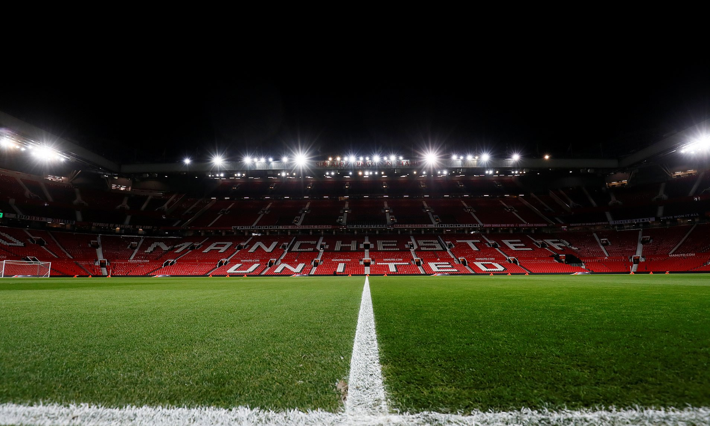

About Players
.jpg)
Manchester United Football Club is a professional football club based in Old Trafford, Greater Manchester, England, that competes in the Premier League, the top flight of English football. Nicknamed "the Red Devils", the club was founded as Newton Heath LYR Football Club in 1878, changed its name to Manchester United in 1902 and moved to its current stadium, Old Trafford, in 1910.
Old Trafford Stadium
Old Trafford is a football stadium in Old Trafford, Greater Manchester, England, and the home of Manchester United. With a capacity of 74,140 seats
Also Visit
History of the Club
Old Trafford first opened its turnstiles on 19th February, 1910. The new stadium was commissioned after Manchester United’s new chairman decided that their existing modest grounds on Bank Street weren’t suitable for a team that had recently won both the First Division and FA Cup. Scottish architect Archibald Leitch was brought on board to design Old Trafford. One of Britain’s top football designers, between 1899 and 1939 he was responsible for more than 20 stadiums, including Stamford Bridge, Arsenal and Celtic. On 19 February 1910